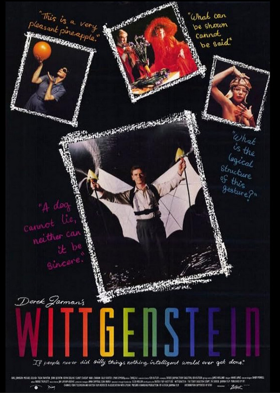

Tariq Ali
1993
75 minutes
You're going to watch this because Kanopy thinks you'll like it for some reason and aggressively advertises it to you. Somehow Kanopy is right. It's a short, stagey, avant-garde biopic of Ludwig Wittgenstein the philosopher, who lived later than you always think he did. He was a WWI soldier and he was a contemporary of other greats such as Bertrand Russell, who is portrayed here as well.
Wittgenstein was known for a lot of almost absurdist games with words, which sounds like mad nonsense to a non-philosopher, and may well be. Some of his reasoning can be maddening to track down.
One of your favorite bands to play on your radio show, long before you even thought of moving to Baltimore, was a band called Matmos--named after the bad guy in Barbarella. Matmos are a couple of experimental musicians who engineer very catchy electronic/musique concrete tracks that tend to be composed from unusual sounds they've mixed together through field recordings or unusual materials they can manipulate live. For example, they put out one album called A Chance To Cut Is A Chance To Cure, which is largely composed from sounds of surgery or made by surgical instruments. This includes songs made with bone saws, sounds of liposuction, etc. You were surprised when you moved to Baltimore that the band, previously based in San Francisco back when you knew them, had moved here not too long before yourself. One of the members is a professor at Johns Hopkins, in fact.
Matmos put together one track based on an idea by Wittgenstein that stuck with you very catchily through the years. They did a song called "Roses and Teeth for Ludwig Wittgenstein" that somehow samples roses, teeth, cow noises, et cetera. The idea came from a notorious Wittgenstein argument involving roses and teeth and how the truth or the falsity of a statement can be less obvious than one thinks and relies heavily on context.
The idea (as expressed in the lyrics of the song, partially "sung" by Bjork) can be illustrated by examining three statements: a newborn has no teeth, a goose has no teeth, and a rose has no teeth. It seems true that a newborn baby has no teeth, and this is clear if you look in his mouth, the obvious location. You can confirm that his teeth haven't grown in yet but presumably they will. A goose also has no teeth. We can confirm this by looking in the goose's mouth as well to see there aren't any teeth in the goose's jaw. The goose has no teeth in its wings either, for that matter, should we wish to check there as well.
However, in the case of a rose, it's not even obvious where we would begin to look for teeth. It's absurd to look anywhere for teeth in a rose--in its stem, in its petals, et cetera. It's so absurd, in fact, that one place is good as another. So it's no less absurd to look for the rose's teeth in the mouth of a nearby cow. Indeed, here we find teeth! Why would these teeth belong to the rose? Well, the cow stands around eating grass with the teeth in its mouth. The grass passes through the cow and turns to dung. And when the cow shits in the field, it provides fertilizer that nourishes the rose. So it may be said in this context that "the rose has teeth in the mouth of the beast". This suggests that it's not so obvious that the statement that "the rose has no teeth" is necessarily true.
It is left as an exercise to the reader whether this is profound or mad or absurd or some mixture of the three. But it certainly makes for a catchy song chorus.
Time to choose something different: